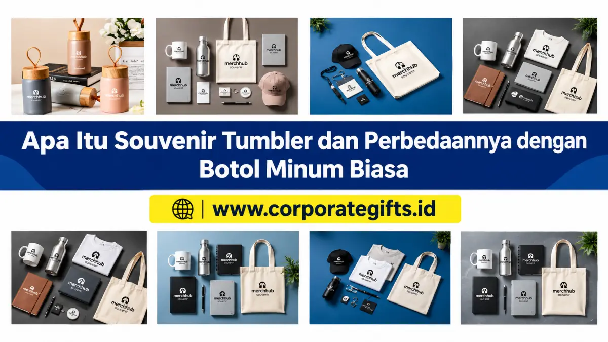

Corporate Gifts ID - Dalam dekade terakhir, tren pemberian cinderamata korporat maupun perayaan personal mengalami pergeseran signifikan dari barang hiasan pajangan menuju produk yang mengutamakan fungsi sehari-hari. Salah satu produk yang paling banyak diminati dalam katalog souvenir kantor adalah tumbler kustom. Namun, tidak sedikit penyelenggara acara yang masih menyamakan antara souvenir tumbler dengan botol minum plastik biasa.
Meskipun keduanya sama-sama berfungsi menampung cairan minuman, filosofi desain, kualitas material pembuatan, teknologi penahan suhu, hingga nilai prestise merek yang dihadirkan memiliki perbedaan yang sangat kontras. Memahami perbedaan ini secara mendalam sangat krusial agar alokasi anggaran pengadaan cinderamata Anda menghasilkan impresi positif yang membekas lama bagi penerima.
Poin Kunci Souvenir Tumbler vs Botol Minum Biasa:
- Teknologi Insulasi Termal: Souvenir tumbler modern dilengkapi dinding ganda (double wall vacuum insulation) yang mampu menjaga suhu kopi panas atau air es dingin hingga 8-12 jam.
- Fleksibilitas Branding Eksklusif: Permukaan tumbler berbahan metal atau bambu dapat dipersonalisasi dengan teknik laser grafir permanen yang tahan kikis seumur hidup.
- Dukungan Kampanye Keberlanjutan (ESG): Mengganti botol plastik kemasan sekali pakai dengan tumbler berkualitas tinggi secara nyata mengurangi timbulan sampah plastik harian.
- Tingkat Retensi Penggunaan: Tumbler yang fungsional dibawa ke ruang kerja, kendaraan, hingga tempat olahraga, memberikan paparan logo brand secara berkelanjutan.
Definisi Souvenir Tumbler: Cinderamata Bernilai Guna Tinggi
Secara harfiah, souvenir tumbler adalah wadah minuman portabel multifungsi yang dirancang secara khusus sebagai hadiah apresiasi, media promosi, atau kenang-kenangan resmi suatu acara. Berbeda dengan botol minum kemasan pabrik, souvenir tumbler dibuat dengan standar durabilitas tinggi dan permukaan yang siap dikustomisasi menggunakan identitas grafis tertentu.
Di lingkungan korporat, tumbler sering dijadikan instrumen utama dalam paket onboarding karyawan baru, cinderamata seminar eksekutif, hingga bingkisan terima kasih untuk mitra bisnis VIP. Keberadaannya di atas meja kerja mencerminkan kepedulian perusahaan terhadap hidrasi sehat dan gaya hidup modern karyawan.
Karakteristik Utama Souvenir Tumbler Modern
Ada empat pilar keunggulan yang membedakan souvenir tumbler bermutu tinggi dari wadah minum konvensional:
- Tingkat Kustomisasi Luas (Customizable): Mampu dicetak logo korporat, slogan kampanye, nama personal penerima, hingga grafis artistik full-color menggunakan teknologi UV print atau grafir laser serat optik presisi.
- Kinerja Retensi Suhu Efektif (Thermal Performance): Menggunakan lapisan vakum kedap udara di antara dinding dalam dan luar sehingga bagian luar tumbler tetap kering tanpa embun (sweat-free) saat diisi air es dingin, serta aman disentuh tangan saat diisi teh mendidih.
- Estetika Desain Ergonomis (Aesthetic Appeal): Finishing matte doff, aksen kayu bambu alami, hingga penutup flip-top dengan karet silikon anti-bocor menghadirkan kesan mewah dan elegan.
- Standar Material Food Grade: Menggunakan bahan dasar stainless steel SUS 304, kaca borosilikat tahan panas, atau plastik Tritan yang aman dari kontaminasi zat kimia beracun.
Perbedaan Mendasar Tumbler dan Botol Minum Biasa
Untuk memahami alasan mengapa souvenir tumbler memiliki nilai prestise yang jauh lebih tinggi daripada botol air biasa, mari telaah perbedaan teknis keduanya:
1. Konstruksi Material dan Ketahanan Fisik
Botol minum biasa umumnya terbuat dari plastik polimer lapis tunggal (seperti PET atau polipropilena ekonomis) yang rentan penyok, retak bila terbentur, dan mudah mengalami degradasi warna. Sebaliknya, souvenir tumbler menggunakan konstruksi logam stainless steel tahan karat atau kaca borosilikat tebal yang dirancang untuk penggunaan bertahun-tahun tanpa kehilangan performa.
2. Kemampuan Menjaga Suhu Minuman
Botol minum standar tidak memiliki mekanisme penahan suhu; air dingin yang dituangkan ke dalamnya akan cepat kembali ke suhu ruangan dalam waktu kurang dari 30 menit sambil membasahi meja karena kondensasi embun. Tumbler vacuum insulated mampu menahan suhu dingin hingga 12 jam dan minuman hangat hingga 8 jam, menjadikannya sahabat ideal bagi pecinta kopi dan teh hangat di ruangan ber-AC.
3. Persepsi Nilai dan Kesan Penerima
Menerima botol plastik polos terasa seperti mendapatkan barang inventaris biasa yang mudah dibuang. Sementara itu, menerima souvenir tumbler bermutu tinggi yang dikemas rapi dalam hardbox eksklusif dengan nama penerima terukir rapi akan membangkitkan rasa dihargai secara mendalam.

Koleksi varian souvenir tumbler promosi dengan pilihan material stainless steel, kaca, dan aksen eco-friendly.
Tabel Komparasi Lengkap: Tumbler Custom vs Botol Biasa
Berikut adalah rangkuman matriks perbandingan objektif antara souvenir tumbler berinsulasi vakum dengan botol minum plastik konvensional:
| Parameter Aspek | Souvenir Tumbler Custom | Botol Minum Biasa |
|---|---|---|
| Bahan Konstruksi Utama | Stainless Steel SUS 304, Borosilikat, Tritan Food Grade | Plastik PET tipis, Polimer daur ulang standar |
| Fitur Insulasi Suhu | Double Wall Vacuum (Tahan panas 8 jam, dingin 12 jam) | Single wall tanpa insulasi (Suhu cepat kembali normal) |
| Kustomisasi Desain | Laser grafir permanen, UV print rotary 360°, embos logo | Sablon sederhana 1 warna, mudah terkelupas bila dicuci |
| Kondensasi Embun Luar | Bebas embun (sweat-proof), meja kerja tetap kering | Mengembun basah dan meninggalkan noda air di meja |
| Masa Pakai (Durabilitas) | Panjang (2 sampai 5+ tahun pemakaian rutin) | Pendek (beberapa minggu hingga beberapa bulan) |
| Persepsi Citra Brand | Premium, eksklusif, prestisius, profesional | Sederhana, berbiaya murah, fungsi minimalis |
Keterangan: Seluruh tumbler yang diproduksi oleh CorporateGifts.ID telah melalui pengujian laboratorium bebas zat BPA serta memiliki sertifikasi ketahanan bocor.
Kelebihan Souvenir Tumbler Dibanding Souvenir Lainnya
Mengapa perusahaan lebih sering memilih tumbler daripada souvenir seperti mug keramik, payung promosi, atau gantungan kunci? Berikut faktor pertimbangannya:
- Efisiensi Mobilitas: Berbeda dari mug keramik yang hanya tertahan di meja kantor, tumbler memiliki tutup kedap cairan yang memungkinkan pengguna membawanya ke dalam mobil, ruang seminar, hingga saat dinas luar kota.
- Tingkat Eksposur Merek Maksimal: Setiap kali penerima meminum air di tempat umum, logo korporat Anda terlihat oleh rekan kerja, mitra rapat, dan lingkungan sekitarnya tanpa kesan memaksakan iklan.
- Universal untuk Seluruh Kalangan: Mulai dari staf magang, peserta webinar mahasiswa, manajer divisi, hingga jajaran direksi, setiap orang membutuhkan air minum bersih setiap hari.
- Keselarasan dengan Inisiatif Lingkungan Hijau: Perusahaan yang membagikan tumbler custom secara aktif mendukung gerakan pengurangan limbah plastik sekali pakai, memperkuat laporan akuntabilitas sosial korporasi.
Standar Keamanan Material: Food Grade & BPA-Free
Ketika memilih souvenir drinkware, faktor keamanan kesehatan adalah prioritas mutlak yang tidak boleh dikompromikan. Pastikan produk tumbler memenuhi kriteria berikut:
- Stainless Steel Berkualitas (SUS 304 atau SUS 316): Jenis baja tahan karat ini tidak bereaksi terhadap asam minuman (seperti kopi atau jus lemon), tahan karat korosif, dan tidak meninggalkan rasa logam pada lidah.
- Bebas Zat Bisphenol-A (BPA-Free): Komponen tutup plastik dan sedotan wajib bebas dari senyawa BPA berbahaya yang dapat larut ke dalam air saat terkena suhu panas.
- Segel Silikon Kualitas Medis: Karet silikon penahan kebocoran harus bersifat tahan panas, elastis, dan mudah dilepas untuk dicuci agar terhindar dari timbunan bakteri atau jamur.
Tips Memilih Souvenir Tumbler Sesuai Kebutuhan Acara
Agar pengadaan cinderamata berjalan efektif dan sesuai alokasi dana, perhatikan panduan praktis berikut:
- Identifikasi Audiens dan Momen: Untuk acara donor korporat atau tamu kehormatan, pilih tumbler vacuum SUS 304 beraksen kayu bambu dalam kotak magnetik mewah. Untuk kegiatan jalan santai (family gathering) atau lomba anak, pilih tumbler botol plastik Tritan dengan handle jinjing ergonomis.
- Sesuaikan Kapasitas Volume: Ukuran 450 ml hingga 500 ml adalah standar ideal yang pas di cup holder mobil dan nyaman digenggam tangan.
- Pilih Metode Branding yang Tepat: Jika menginginkan logo yang abadi tanpa resiko pudar, pilih laser engraving. Jika logo perusahaan Anda memiliki gradasi warna spesifik, teknologi UV print rotary adalah solusi terbaik.
- Pesan Melalui Vendor Kredibel: Pastikan penyedia jasa mampu menyediakan sampel fisik dummy sebelum produksi massal dimulai, serta memiliki jaminan garansi retur unit cacat.
Kesimpulan
Souvenir tumbler bukan sekadar wadah air biasa, melainkan media investasi reputasi yang menghubungkan kepedulian fungsional perusahaan dengan kebanggaan penerimanya. Dengan memilih produk berinsulasi berkualitas, desain kustom yang elegan, dan material berstandar food grade, cinderamata yang Anda berikan akan menemani aktivitas harian klien maupun karyawan selama bertahun-tahun.
Butuh rekomendasi model tumbler custom terbaik atau ingin mengajukan simulasi desain mockup gratis dengan logo perusahaan Anda? Tim konsultan CorporateGifts.ID siap membantu mewujudkan pengadaan cinderamata korporat Anda dengan harga grosir kompetitif dan pengerjaan tepat waktu.